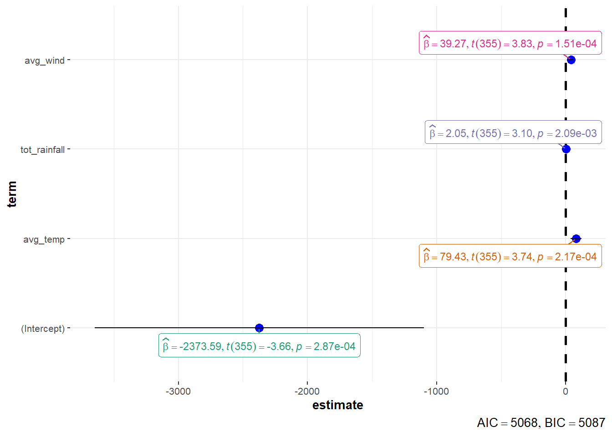
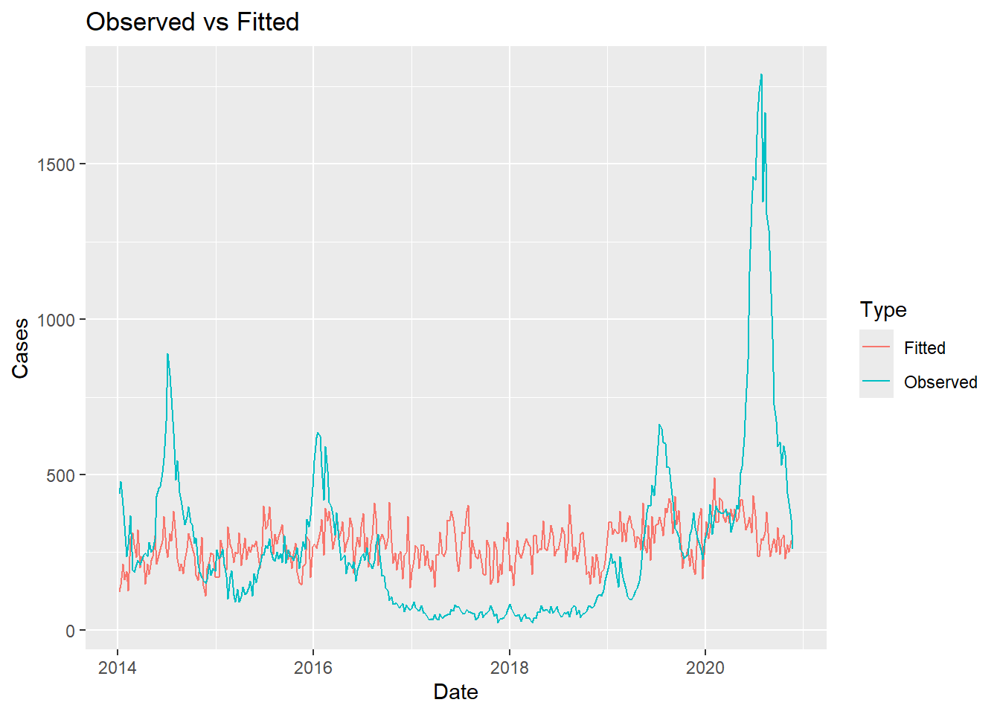
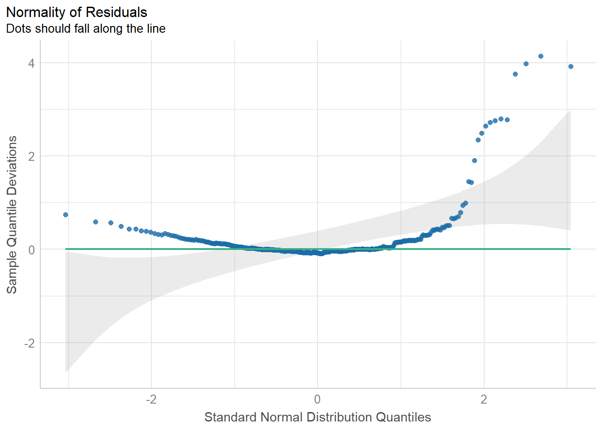
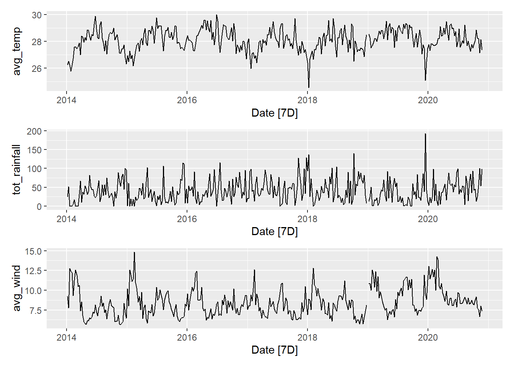
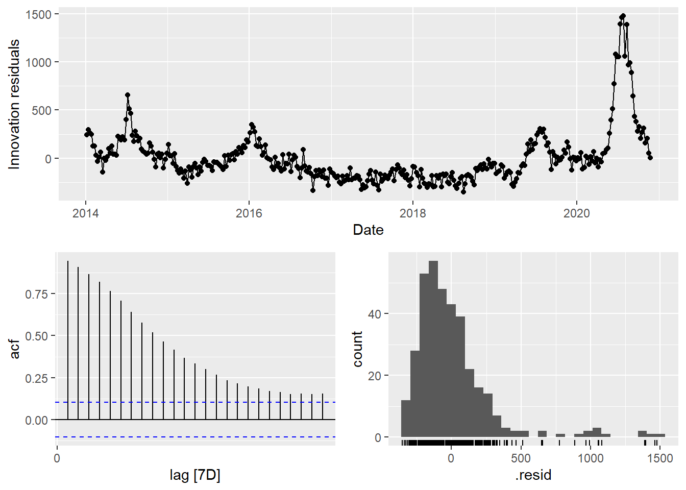
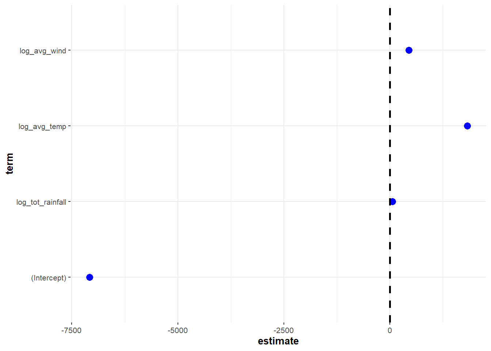
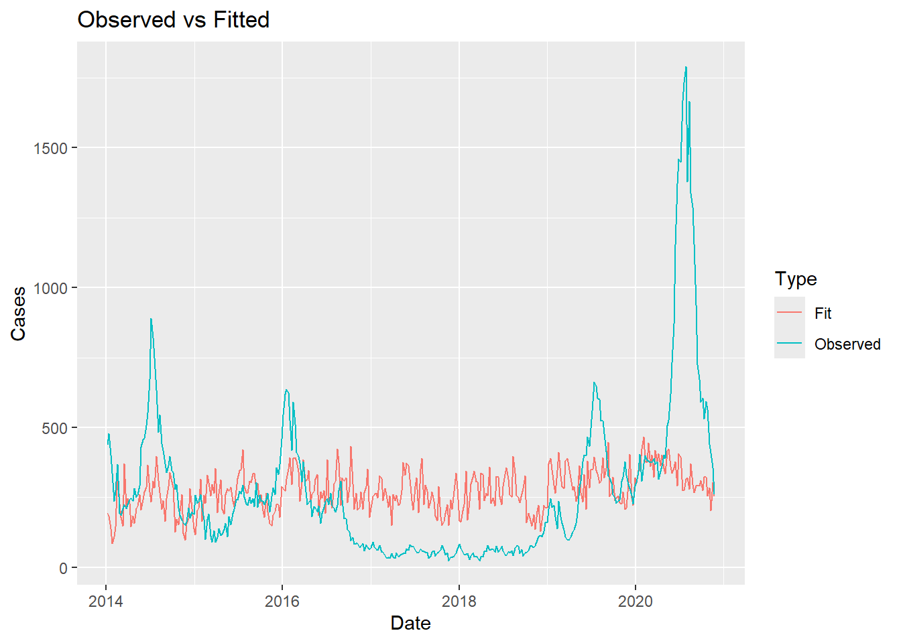

pacman::p_load(
tidyverse,
fable,
tsibble,
feasts,
patchwork,
plotly,
lubridate,
caret,
performance,
ggstatsplot,
qqplotr,
tsibbledata
)Explanatory models
How much of Dengue is explained by Climate?
Linear Regression
df <- read_csv("data/dengue_climate_joined_by_week_transformed_diff.csv")mdl <- lm(Cases ~ avg_temp, data = df)Model Construct
i <- c("avg_temp","tot_rainfall","avg_wind")
j <- ""
for (v in i) {
if (j == "") {
j <- v
} else {
j <- paste0(j,"+",v)
}
}
mdl <- lm(as.formula(paste0("Cases ~ ",j)), data=df)summary(mdl)
Call:
lm(formula = as.formula(paste0("Cases ~ ", j)), data = df)
Residuals:
Min 1Q Median 3Q Max
-360.77 -166.33 -71.29 67.18 1497.88
Coefficients:
Estimate Std. Error t value Pr(>|t|)
(Intercept) -2373.5890 647.8730 -3.664 0.000287 ***
avg_temp 79.4251 21.2559 3.737 0.000217 ***
tot_rainfall 2.0540 0.6625 3.100 0.002087 **
avg_wind 39.2656 10.2478 3.832 0.000151 ***
---
Signif. codes: 0 '***' 0.001 '**' 0.01 '*' 0.05 '.' 0.1 ' ' 1
Residual standard error: 278.9 on 355 degrees of freedom
Multiple R-squared: 0.05728, Adjusted R-squared: 0.04931
F-statistic: 7.19 on 3 and 355 DF, p-value: 0.0001068Model coeff plot
ggcoefstats(mdl,
output = "plot")
Model Metrics
mdl %>% broom::tidy()# A tibble: 4 × 5
term estimate std.error statistic p.value
<chr> <dbl> <dbl> <dbl> <dbl>
1 (Intercept) -2374. 648. -3.66 0.000287
2 avg_temp 79.4 21.3 3.74 0.000217
3 tot_rainfall 2.05 0.663 3.10 0.00209
4 avg_wind 39.3 10.2 3.83 0.000151summ <- summary(mdl)
summ$adj.r.squared[1] 0.04931463summ$fstatistic[[1]][1] 7.190144Model AVP
df_a <- data.frame(Date=df$Date, Cases=mdl$fitted.values, Type="Fitted")
df_b <- data.frame(Date=df$Date, Cases=df$Cases, Type="Observed")
df_c <- dplyr::bind_rows(df_a, df_b)
ggplot(data = df_c) +
geom_line(aes(x = Date, y = Cases, colour = Type)) +
ggtitle("Observed vs Fitted")
Model Diagnostics
plots <- plot(check_model(mdl, panel = FALSE))plots[[6]]
df_tbl <- df %>% as_tsibble(index = Date) %>% fill_gaps(.full = TRUE) %>% fill(Cases)
library(patchwork)
first_var <- TRUE
for (v in i) {
if (first_var == TRUE) {
p <- eval(parse(text = paste0("df_tbl %>% autoplot(",v,")")))
first_var <- FALSE
} else {
p <- p / eval(parse(text = paste0("df_tbl %>% autoplot(",v,")")))
}
}
p
p1 <- df_tbl %>% autoplot(Cases)
p2 <- df_tbl %>% autoplot(avg_temp)p1 / p2Time Series Linear Regression
# Convert the tibble dataframe to a tsibble dataframe
tslm_ts <- df %>% dplyr::select(-c("Year", "WkNo"))
tslm_tbl <- tslm_ts %>% as_tsibble(index = Date) %>% fill_gaps(.full = TRUE) %>% fill(colnames(tslm_ts))
tslm_slice <- tslm_tblModel Construct
v = "Cases"
j = "log_tot_rainfall + log_avg_temp + log_avg_wind"
tslm_mdl <- tslm_slice %>%
model(TSLM(as.formula(paste0(v," ~ ",j))))
report(tslm_mdl)Series: Cases
Model: TSLM
Residuals:
Min 1Q Median 3Q Max
-352.58 -166.61 -61.20 65.55 1476.41
Coefficients:
Estimate Std. Error t value Pr(>|t|)
(Intercept) -7081.58 1908.02 -3.711 0.000239 ***
log_tot_rainfall 60.53 17.88 3.386 0.000789 ***
log_avg_temp 1823.67 540.58 3.374 0.000824 ***
log_avg_wind 451.40 105.16 4.293 2.28e-05 ***
---
Signif. codes: 0 '***' 0.001 '**' 0.01 '*' 0.05 '.' 0.1 ' ' 1
Residual standard error: 277.3 on 356 degrees of freedom
Multiple R-squared: 0.06569, Adjusted R-squared: 0.05781
F-statistic: 8.343 on 3 and 356 DF, p-value: 2.2448e-05Model Metrics
tslm_mdl %>%
accuracy()# A tibble: 1 × 10
.model .type ME RMSE MAE MPE MAPE MASE RMSSE ACF1
<chr> <chr> <dbl> <dbl> <dbl> <dbl> <dbl> <dbl> <dbl> <dbl>
1 "TSLM(as.formula(pa… Trai… -1.65e-14 276. 180. -125. 152. 4.74 4.42 0.943Model Residuals
gg_tsresiduals(tslm_mdl)
Model Coeff plot
ggcoefstats(tslm_mdl %>% tidy(),
output = "plot")
tslm_mdl %>% tidy()# A tibble: 4 × 6
.model term estimate std.error statistic p.value
<chr> <chr> <dbl> <dbl> <dbl> <dbl>
1 "TSLM(as.formula(paste0(v, \" ~ \"… (Int… -7082. 1908. -3.71 2.39e-4
2 "TSLM(as.formula(paste0(v, \" ~ \"… log_… 60.5 17.9 3.39 7.89e-4
3 "TSLM(as.formula(paste0(v, \" ~ \"… log_… 1824. 541. 3.37 8.24e-4
4 "TSLM(as.formula(paste0(v, \" ~ \"… log_… 451. 105. 4.29 2.28e-5Model AVP
var_fitted <- fitted(tslm_mdl)[,2:3] %>%
as_tibble() %>%
rename(Cases=.fitted)
var_fitted$Type <- "Fit"
tslm_slice$Type <- "Observed"
var_avp <- dplyr::bind_rows(var_fitted, tslm_slice)
ggplot(data = var_avp) +
geom_line(aes(x = Date, y = Cases, colour = Type)) +
ggtitle("Observed vs Fitted")